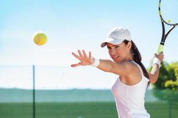
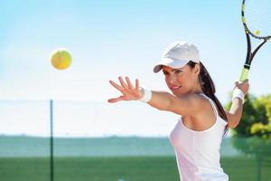

Os esportes fazem parte do cotidiano de muitas pessoas e atualmente são vistos com muita importância, não apenas para a manutenção da saúde física e mental, mas também como mecanismo de inclusão social. Para entender melhor como chegamos ao modelo de práticas desportivas que temos hoje é necessário conhecer a história do esporte através dos tempos. Segundo Manoel Tubino, um dos mais relevantes autores dessa área, a história do esporte pode ser dividida em três períodos:
Esporte Antigo: período que abrange desde o início das práticas desportivas até a primeira metade do século XIX.
Esporte Moderno: intervalo de tempo que compreende desde 1820 até 1980.
Esporte Contemporâneo: período que transcorre desde 1980 em diante, ou seja, até o momento atual.
As primeiras atividades eram realizadas com o objetivo de sobrevivência e só posteriormente ganharam características de esporte. Eram a corrida de caça, esgrima e lutas. Algumas civilizações antigas como a China e Japão desenvolveram as artes marciais. O Egito promovia a corrida, o arremesso e praticava uma atividade semelhante ao que atualmente se conhece como futebol.
Os Jogos Olímpicos da Antiguidade são tidos como a principal manifestação esportiva de toda a era antiga. Esses eventos eram celebrados na cidade de Olímpia, na localidade de Élida, em um bosque sagrado chamado “Altis”, em homenagem a Zeus Horquios. Desde essa época, os Jogos já eram realizados a cada quatro anos. Esses Jogos eram anunciados pelos arautos que proclamavam um período onde as guerras estavam proibidas e eram organizados e esenvolvidos por sacerdotes denominados helenoices.
Portanto, o esporte teve sua história composta por diversos momentos sendo motivado por necessidades pertinentes ao ser humano e aspectos culturais e sociais de cada período.
Portanto, o esporte teve sua história composta por diversos momentos sendo motivado por necessidades pertinentes ao ser humano e aspectos culturais e sociais de cada período.
"As modalidades dos esportes mais comuns variam conforme a região, pois as condições climáticas influenciam bastante a prática. Na China, por exemplo, o esporte mais popular é o tênis de mesa; na Austrália, é o rúgbi; no Quênia, é o atletismo; e no Canadá, o hóquei no gelo. Já no Brasil a paixão nacional é o futebol, uma das práticas esportivas mais populares do mundo."
"O gosto pelos esportes reúne, periodicamente, os principais atletas de diversos países. Com origem na Grécia, por volta de 770 a.C., os Jogos Olímpicos acontecem a cada dois anos, revezando-se entre Olimpíadas de Inverno e Verão, e contam com a participação de aproximadamente 200 países. Outro evento popular do esporte, em especial no Brasil, é a Copa do Mundo de Futebol, que acontece a cada quatro anos e reúne 32 seleções."
"De acordo com a pesquisa do Ministério do Esporte realizada em 2013, os dez esportes mais praticados no Brasil são, em ordem: futebol; caminhada e corrida; voleibol; academia e musculação; natação; futsal; musculação; ciclismo; handebol; e basquetebol.
"Seja individual, seja em equipe, os esportes estão entre as principais atividades físicas praticadas pelo homem moderno. Segundo pesquisa do Ministério do Esporte do Brasil, realizada em 2013, quase metade dos brasileiros que praticam atividades físicas é adepta de algum esporte."
 
